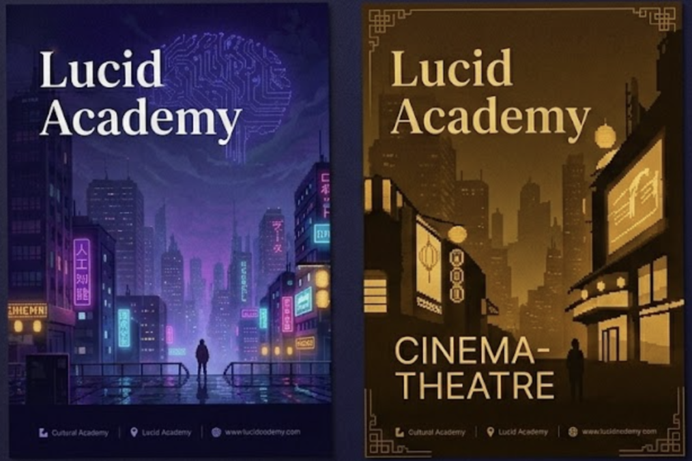
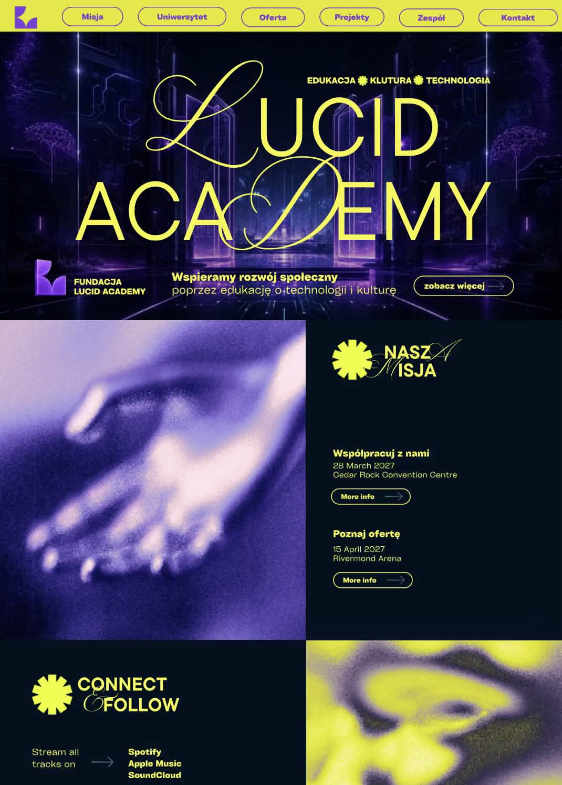
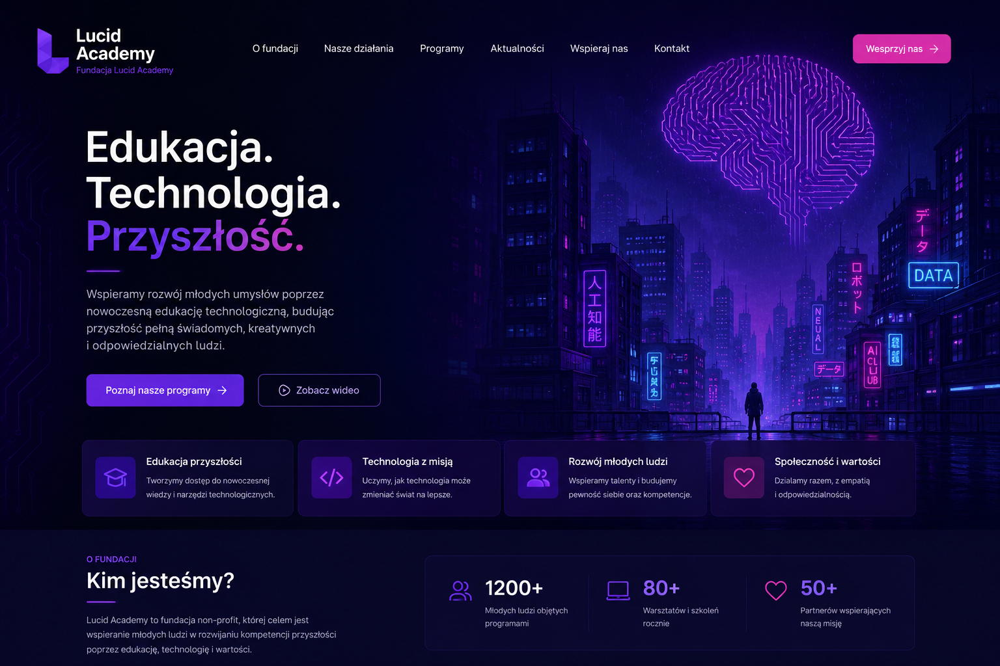
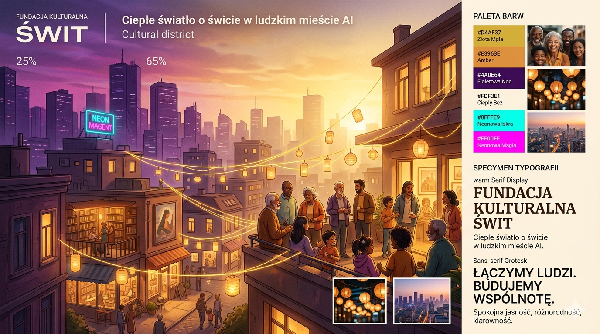
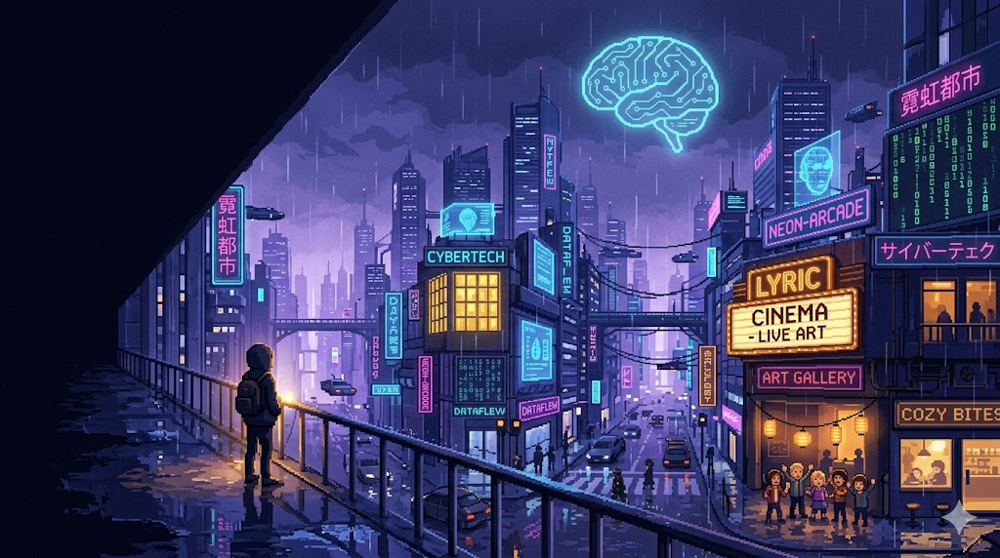
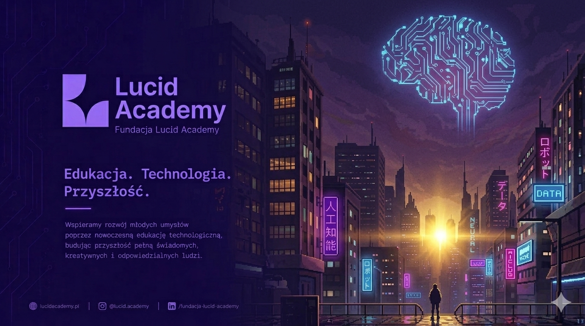

Synthwave'owe miasto nocą — ale jedna zasada robi z niego markę:
zimny neon to technologia,
ciepłe złoto to kultura i wspólnota. Oba światła
świecą obok siebie. To dosłownie misja fundacji:
AI nie zastępuje kultury — kultura jaśnieje pośród technologii.
◑ Dwa światła, jedno miasto
One-page · wizytówka fundacjiOdbiorca: Anna — nietechniczna, lekko spłoszona AICel: zaufanie w 60 s → kontakt
Zasada przewodnia
Dwa światła, jedno miasto
Jedna prosta reguła porządkuje całą markę: technologia świeci na
zimno, kultura na ciepło — i oba światła są na tym samym kadrze.

Po lewej — zimne światło: neonowe
miasto AI, mózg-obwód, samotna sylwetka.
Po prawej — ciepłe światło:
kino-teatr, lampiony, kultura i ludzie. Ta sama marka, dwa światła
obok siebie.
◆ Zimne światło — technologia
cyjan + magenta · nowoczesność i AI
Neon, sieć neuronowa, mózg-obwód, dane
Buduje klimat „high-tech" i wiarygodność
Zostaje w tle jako energia — nie atakuje
＋ Ciepłe światło — kultura
złoto + bursztyn · wspólnota i CTA
Okna, lampiony, ludzie, sygnaturowy blask
Mały, ale mocny akcent — przyciąga wzrok i
serce
„Kultura jaśnieje pośród technologii"
Z prac graficzek
Co bierzemy, co poprawiamy
Dwie propozycje wyjściowe — Alicja i Martyna. Z każdej zabieramy to,
co najlepsze, i nazywamy problem, którego unikamy. Nasz kierunek to
ich synteza.

Praca Alicji — charakter
✓ Co bierzemy
Odważna, edytorska typografia z charakterem
Żółć jako energiczna sygnatura marki
Ciepła, kulturalna energia — nasz nośnik
ludzkiego akcentu
✕ Co poprawiamy
Dekoracja kosztem czytelności i hierarchii

Praca Martyny — struktura
✓ Co bierzemy
Spójna struktura one-page i czytelne CTA
Liczniki zaufania (1200+, 80+) i klimat AI
Uporządkowane karty obszarów oferty
✕ Co poprawiamy
Generyczny „AI-startup" — łatwo pomylić z firmą
Dosłowny mózg-obwód: zimny, może spłoszyć Annę
Brak ludzi i ciepła — sama technologia
Doświadczenie · podróż w dół
Od mroku ku ciepłu
Strona zaczyna się dość mrocznie i technologicznie — a wraz ze
scrollowaniem rozjaśnia się ciepłem, ludźmi i kulturą. To nie
dekoracja: tak prowadzimy Annę
od wątpliwości do zaufania. (Tło
tego moodboardu też się ociepla w dół — przewiń, żeby zobaczyć.)
1 · Pierwsze wrażenie — intryga
Anna: niepewność, lekki lęk przed AI
Mroczny, nowoczesny hero z jednym małym złotym światłem. Cel:
rozbić pierwszą wątpliwość i wzbudzić
ciekawość — „to nie jest straszne, to wciąga".
2 · Zrozumienie — „oni mnie rozumieją"
Anna: ciekawość rośnie, opada gard
Nazywamy jej obawy po ludzku, bez żargonu. Pojawiają się pierwsze
ciepłe akcenty. Cel:
zbudować poczucie bezpieczeństwa.
3 · Ludzie i kultura — zaufanie
Anna: zaufanie, sympatia
Twarze, historie, wspólnota, kultura — tu jest najwięcej ciepła i
złota, z edytorską energią pracy Alicji. Cel:
pokazać ludzki akcent i dowieść „za tym
stoją ludzie jak ja".
4 · Kontakt — zaproszenie
Anna: gotowość, by napisać
Najcieplejsza, zapraszająca sekcja z jednym złotym CTA. Cel:
naturalna decyzja o kontakcie.

Biegun ciepła — dokąd zmierza dół strony. Tu docieramy
emocjonalnie: najwyższy poziom
ludzkiego wymiaru, zaufania i ciepła — twarze, wspólnota,
kultura. (Chodzi o poziom ciepła i człowieczeństwa, nie o
jasne tło — nasza baza pozostaje ciemna.)
Ewolucja, nie rewolucja
Ten sam świat — cieplejsza temperatura

Punkt wyjściaMocny klimat AI, ale chłodny — ryzyko, że
spłoszy nietechniczną Annę.
→

Dokąd idziemyTen sam ciemny świat AI + mocny złoty błysk i
sylwetka idąca ku światłu.
Kierunek · north star
Noc dominuje, złoto przyciąga
Noc i technologia zajmują ~80% kadru;
mały, intensywny złoty punkt światła na horyzoncie i sylwetka
idąca ku niemu = nowoczesne AI, które daje nadzieję, nie straszy.
Sora — czysty, geometryczny grotesk. Nowoczesny, „techowy"
ton pasujący do AI/neonu; świetna czytelność na ciemnym tle.
Opcjonalny akcent
po ludzku
Aa Bb Cc — ąćęłńóśźż 0123456789
Fraunces (italic) — tylko jako rzadki, ciepły akcent w
cytatach / wyróżnieniach. Wnosi „ludzki" ton tam, gdzie chcemy
zmiękczyć. Nie do nagłówków UI.
Ikonografia
Linia, zaokrąglona, przyjazna
Rozmowa
Wspólnota
Edukacja
Kierunek
Zaufanie
AI / iskra
Komponenty UI
Złoto = akcja, reszta oddycha
Edukacja AI po ludzku
Karta na półprzezroczystym szkle z neonową poświatą. Jedna karta =
jeden obszar oferty. Złota ikona prowadzi wzrok.
1200+
przeszkolonych
50+
projektów
80+
partnerów
Jeden główny ruch
Strona prowadzi do kontaktu. Złoty przycisk = akcja docelowa;
ghost = ruch poboczny. Nigdy dwa krzykliwe CTA naraz.
Kierunek grafik
Czego chcemy, czego unikamy
✓ Tak
Ciemne, premium AI: neon, sieć/obwód, czysto i z klasą
Mały, mocny złoty punkt światła = nadzieja
Twarze ludzi, wspólnota, kultura — nie tylko technologia
Edytorska, ludzka osobowość i odważna typografia (energia z
pracy Alicji)
Nowoczesny, uporządkowany, „high-end" finish
✕ Nie
Brudny, deszczowy cyberpunk-slums, dystopia
Zimna noc bez ludzi i bez ciepłego światła
Jasny, ciepły świt jako dominanta („folk")
Złoto rozlane wszędzie — ma być akcentem
Dla graficzek · czego oczekujemy
Najcenniejszy efekt: moodboard jak ten
Najbardziej zależy nam na
brand-toolkicie w stylu i jakości
grafiki poniżej — jeden arkusz, który zbiera
czcionki, ikony i paletę barw (plus komponenty UI i
kierunek zdjęć). Dostajemy wtedy gotowy, spójny system do zbudowania
strony.
Myślę że ten poniżej to jeszcze nie jest "to" ale ma dobrą strukturę i
tego typu grafika byłaby najcenniejsza. Może uda Wam sie to dopracować
jescze.